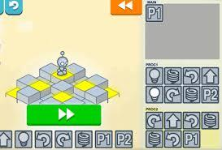

Andrija's Github Website
Welcome to my website!
Home
My Portfolio
All About Me

The first thing in Computer Science we did was play the Lightbot game.
It was a very fun coding game where the objective was to input code such that the robot hops, turns, or walks into a certain spot and lights up.
This is my Interactive Fiction project that I did with my partner Christina. It starts in North Korea on a citizen named Mal-Chin who decides he wants to go to America and try the In-N-Out burger. The player has to make desicions that either evade him from capture or furthur his progress in getting the burger.